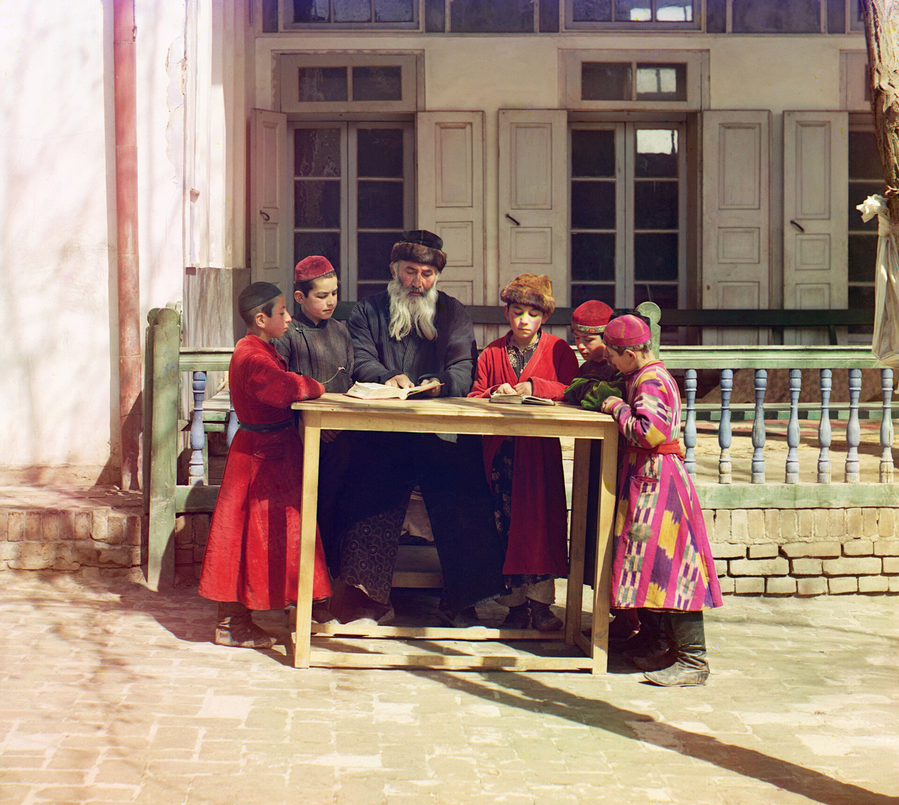

Бухарские евреи: история переселения в Израиль и США
Бухарские евреи — древняя центральноазиатская еврейская община, сложившаяся вокруг Бухары и Самарканда и говорящая на бухори (иудео-таджикском), персидском диалекте. В материале прослеживаются жизнь общины при Бухарском эмирате, перемены после русского завоевания 1868 года, основание «Бухарского квартала» в Иерусалиме в 1890-х, репрессии советского периода и, главное, массовая миграция 1970-х и после 1991 года — в Израиль (крупнейший центр) и США, особенно в Куинс, Нью-Йорк. Все цифры населения — оценочные.

Бухарские евреи — одна из старейших этно-религиозных групп Центральной Азии, исторически жившая вокруг Бухары и Самарканда (бывший Бухарский эмират). Это ветвь персоязычного еврейства, культурно близкая к евреям Ирана и Афганистана. Ниже история общины и её миграция как диаспоры в Израиль и США изложены по фактам (источники: Jewish Virtual Library, My Jewish Learning, Encyclopedia.com). Цифры населения — оценки, различающиеся по источникам.
Язык и древние корни
Община говорит на бухори — таджикско-персидском диалекте с включением древнееврейских и арамейских слов, традиционно на еврейском письме. По преданию, их корни восходят к евреям, оставшимся в регионе после персидского периода; непрерывное присутствие евреев в городах Центральной Азии (Балх, Мерв, Хорезм) подтверждается к VIII–IX векам н. э. Первое конкретное упоминание бухарской еврейской общины относится к 1240 году.
Жизнь при эмирате
В Бухарском эмирате евреи имели статус «зимми» (защищённого неверующего), жили в отдельной махалле (еврейском квартале) и сталкивались с рядом ограничений — например, отличительной одеждой и определёнными правилами. В 1793 году раввин Йосеф Маймон (Маман), прибывший из Магриба, привёл общину к принятию сефардской религиозной практики, что надолго повлияло на её религиозную жизнь.
Русское завоевание и ранняя миграция
Россия взяла Ташкент в 1865 году и завоевала Туркестан в 1868 году, когда Самарканд вошёл в Русский Туркестан; сам город Бухара ещё около 50 лет оставался протекторатом под властью эмира. В новых условиях расширились свобода передвижения и торговли; Закаспийская железная дорога (1880–1905) покончила с изоляцией региона. Именно в этот период — примерно с 1872 года — евреи начали переселяться в подвластную Османам Палестину (Иерусалим).
«Бухарский квартал» в Иерусалиме
В 1890 году представители общин Бухары, Самарканда и Ташкента создали в Иерусалиме объединение «Ховевей Цион»; в 1891 году они купили землю и учредили Бухарский квартал (Шхунат ха-Бухарим); первое строение — синагога Мусаева — было завершено в 1894 году. В то время это был один из самых зажиточных еврейских кварталов Иерусалима. К Первой мировой войне около 8% евреев, родившихся в Бухаре (примерно 1 500 человек), переселились в Иерусалим.
Советский период
После того как советские власти перекроили Центральную Азию в 1924 году, создав Узбекистан и Таджикистан, режим подавлял религию: синагоги и школы закрывались, издания на иудео-таджикском были запрещены между 1926 и 1940 годами, а ассимиляция усиливалась. Эмиграция в этот период была в основном перекрыта. Во время краткого открытия советских ворот эмиграции в 1972–1975 годах около 8 000 человек переехали в Израиль.
Массовая миграция после 1991 года
После распада Советского Союза массовая миграция в Израиль и США (а также в Европу и Австралию) ускорилась. По некоторым оценкам, к 1993 году около половины из ~50 000 бухарских евреев Узбекистана и Таджикистана уехали, а между 1989 и 2002 годами страну покинули более 90% евреев Узбекистана. Сегодня в Узбекистане остаётся лишь несколько сотен человек.
США: Куинс, Нью-Йорк
В США община сосредоточилась в нью-йоркском районе Куинс — в Форест-Хиллз, Рего-Парк и Кью-Гарденс; 108-я улица получила прозвище «Бухарский Бродвей». В Нью-Йорке действуют Общинный центр бухарских евреев, газета Bukharian Times и Конгресс бухарских евреев. Община сохранила свой язык, кухню и музыкальные традиции.
Население (оценки)
Точной переписи нет, и цифры различаются по источникам. Крупнейший центр — Израиль (~125 000–160 000, оценочно); в США — ~70 000–75 000, из которых около 50 000 в районе Нью-Йорка/Куинса (оценочно). Мировые итоги, приводимые источниками, колеблются примерно от ~150 000–200 000 до ~300 000–350 000. Всё это оценки, а не данные единой переписи.